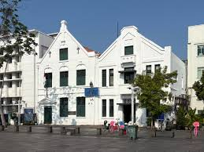
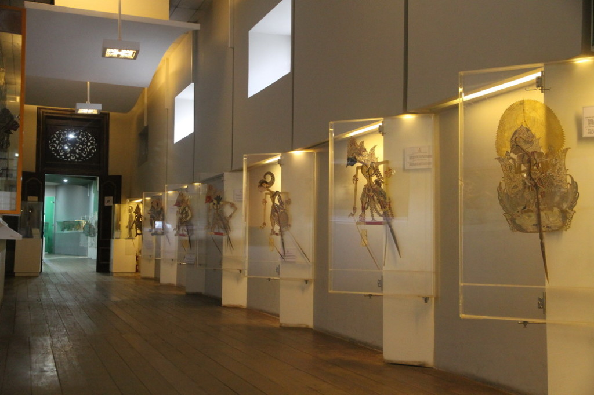
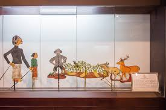
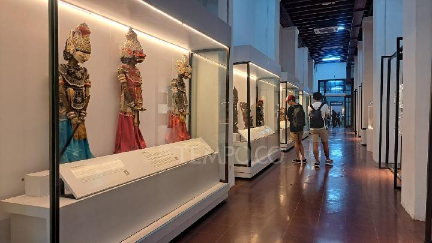
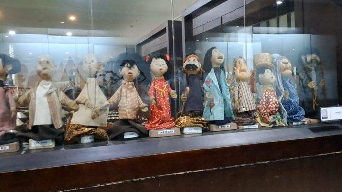
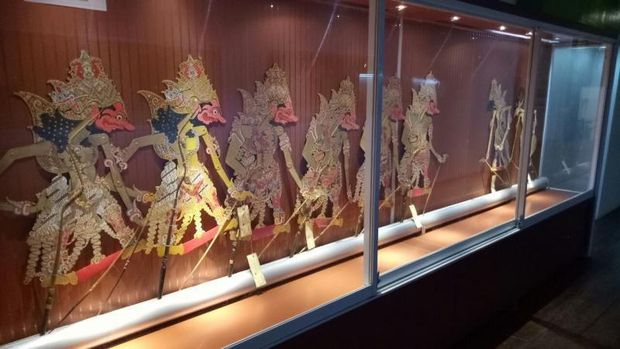

Gedung yang tampak unik dan menarik ini telah beberapa kali mengalami perombakan. Pada awalnya bangunan ini bernama De Oude Hollandsche Kerk ("Gereja Lama Belanda") dan dibangun pertama kali pada tahun 1640. Tahun 1732 diperbaiki dan berganti nama De Nieuwe Hollandse Kerk (Gereja Baru Belanda) hingga tahun 1808 akibat hancur oleh gempa bumi pada tahun yang sama. Selanjutnya tahun 1912 bangunan dirombak secara keseluruhan menjadi gaya rumah Belanda yaitu Neo Renaissance. Ketika kepemilikannya dipegang perusahan Geo Wehry and Co gedung tersebut difungsikan sebagai gudang. Pada tahun 1936 gedung ini sempat dijadikan monumen, sampai satu tahun selanjutnya gedung ini dibeli oleh Bataviasche Genootschaap van Kusten en Wetenschappen yaitu sebuah lembaga yang bergerak di ilmu pengetahuan dan kebudayaan. Tak sampai di situ, tanggal 22 Desember 1939 Gubernur terakhir Belanda, Tjarda van Starkenborgh mengalihfungsikan gedung menjadi museum Batavia Lama. Namun sayang, selama kependudukan Jepang, meseum Batavia lama tidak terawat dengan baik. Setelah kemerdekaan Indonesia, tepatnya tahun 1957 Lembaga Kebudayaan Indonesia(LKI) bersedia mengelola gedung dan mengganti namanya menjadi Museum Jakarta Lama. Namun pada tanggal 1 Agustus 1960, kata "Lama" resmi dihilangkan sehingga menjadi Museum Jakarta. Dua tahun kemudian, tanggal 16 September, LKI menyerahkan kembali pengelolaan kepada Pemerintahan Indonesia khususnya Jakarta. Gedung ini pun sempat dipindahkan ke gedung Jakarta atau yg dikenal Museum Sejarah Jakarta. Satu tahun sebelum diresmikannya Museum Wayang, tepatnya pada acara Pekan Wayang II Wali Kota Jakarta pada saat itu, Ali Sadikin kagum dengan inventarisasi dan kebudayaan wayang. Kekaguman inilah yang mendorong berdirinya Museum Wayang yang diresmikan pada tanggal 13 Agustus 1975, Meskipun telah dipugar beberapa bagian gereja lama dan baru masih tampak terlihat dalam bangunan ini.





